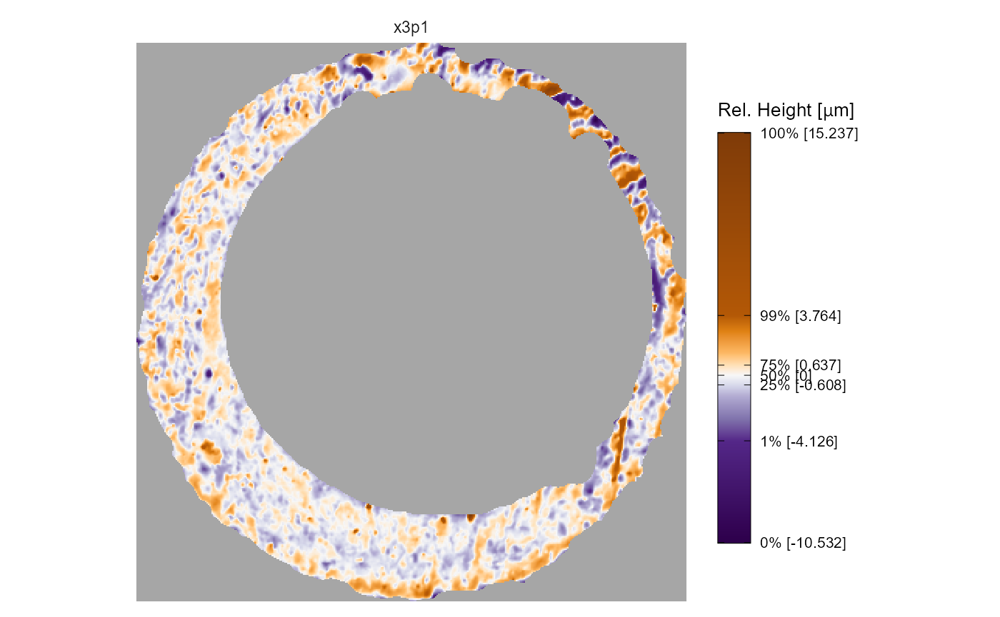
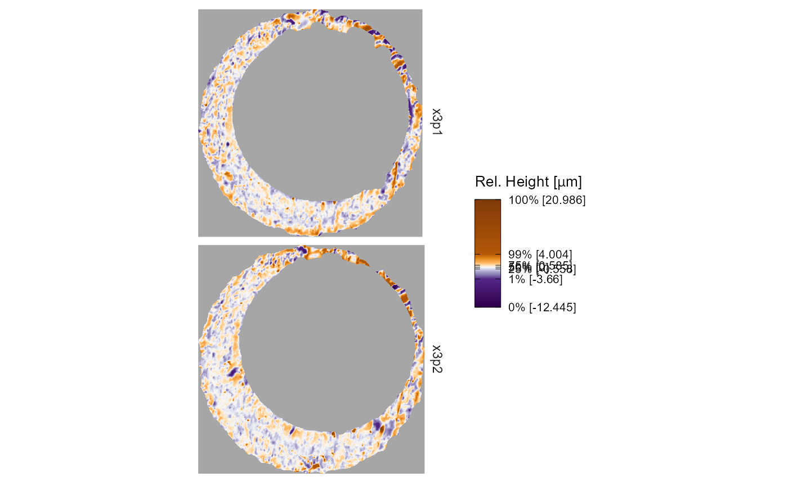

Using and tweaking x3pPlot()
x3pPlot-function.RmdThe x3pPlot() (or x3p_plot()) function
creates a visualization of one or more x3p objects using the
ggplot2 package.
We use base ggplot2 in x3pPlot(), so you
can easily change these settings if you’re already familiar. The
x3pPlot() function essentially consists of a call to
geom_raster() with possible faceting and setting default
features such as the pixel color scale, legend, etc. In this vignette,
we discuss how to change characteristics of the plot.
Basic usage of x3pPlot
First, let’s make sure that we understand the basic functionality of
x3pPlot(). This section will discuss how the arguments of
x3pPlot() change the output, which expose some of the
underlying ggplot2 functionality. Those familiar with
ggplot2 can ignore these arguments, and consequently this
section, by simply adding (+) desired changes to the
ggplot2 object returned by x3pPlot(). The
sections after this one show how you can extend the functionality of
x3pPlot() using ggplot2.
The x3pPlot function takes as its first argument(s) a
sequence or list of x3p objects. The code below demonstrates what we
mean by a “sequence” in that they can be separated by commas. We see
that the output visualizes the surface values of the two x3p objects on
the same color scale using faceting. If not specified, the facet labels
are set to x3p[0-9]{1,} up to the number of x3p objects
passed.
x3pPlot(K013sA1,K013sA2)
Wrapping these objects within a list() provides the
exact same output.1
# exact same output as above, so not shown:
# x3pPlot(list(K013sA1, K013sA2))
x3p.names argument
The other arguments in x3pPlot() change characteristics
of the plot. First, we can change the facet labels; either by setting
the x3p.names object or by passing a named list. Note that
x3p.names is ignored if a named list is used.
# exact same output as above, so not shown:
# x3pPlot(list("Scan A" = K013sA1, "Scan B" = K013sA2))
output argument
The output argument specifies whether the x3p objects
are visualized on the same color scale using faceting, or if each x3p
object is visualized on its own color scale and the output is a list.
The former is useful for comparing the surface values across two or more
scans. The latter output is useful if you have x3p objects whose surface
values are on different scales, meaning one scan’s surface values would
“drown out” others.
x3pPlot(K013sA1,K013sA2,output = "list")
#> $x3p1
#>
#> $x3p2
height.colors, height.quantiles, and
na.value arguments
By default, the color scheme used in x3pPlot() is a
mapping of the x3p object surface value quantiles to a divergent purple,
white, orange color scale. The median surface value is mapped to white
(technically a very light gray) while values below/above the median are
mapped to progressively darker shades of purple/orange, respectively.
The na.value argument is set to "gray65" by
default. The image below summarizes the mapping between 11 surface
quantiles and hexidecimal colors. We chose this mapping because we found
that it highlighted the distinguishable markings on a cartridge case
surface well.

The height.colors and height.quantiles
arguments allow you to change the color scale and quantile mapping. For
example, the code below maps equally-spaced quantiles to grayscale. This
color scale doesn’t distinguish between values below or above the median
surface value. We also change the na.value argument for
illustration.
legend.quantiles and legend.length
arguments
Keen eyes may be twitching at the plot legends in the previous
examples. The tick marks on the plot legend are spaced such that the
first, second, and third quartile labels are bunched-up and overlapping.
We can give the legend quantile labels some breathing room using the
legend.quantiles argument. We can also adjust the legend
length using the legend.length argument, which internally
is passed to the barheight argument of
guide_colorbar().
Color scale
We’ve already discussed how you can redefine the quantile color scale
mapping in the x3pPlot() function. If you want to change to
a color scale that isn’t based on quantiles, then you can simply
overwrite the old color scale using your choice of
scale_fill_* function. The
scale_fill_gradient2() example below illustrates why the
previous quantile mapping is useful – most of the surface values
aren’t extreme or distinguishable, so the quantile mapping
makes the less populous, more interesting impressions more visible. Note
that you will get a warning for overwriting the previous color scale
that you can suppress by wrapping the visualization call as
suppressWarning(print(...))
plt <- x3pPlot(K013sA1,K013sA2,legend.length = grid::unit(1,"in"))
plt +
scale_fill_gradient2(low = "purple",mid = "white",high = "darkorange",midpoint = 0)
#> Scale for fill is already present.
#> Adding another scale for fill, which will replace the existing scale.Legend
The legend can be changed using theme() and/or
guide_colorbar() as below.
plt +
theme(legend.position = "bottom") +
guides(fill = guide_colourbar(barwidth = grid::unit(2,"in"),
barheight = grid::unit(.1,"in"),
title = "New Title",
title.position = "bottom",
label.position = "top",
label.theme = element_text(size = 6,
angle = 90),
title.theme = element_text(size = 8),
frame.colour = "white",
ticks.colour = "white"))Axis Features
We hide the axis information by default. However you might want to
include axis text or ticks. You can add a new theme to the plot to
override the previous settings. We prefer theme_minimal(),
but you do you.
plt +
theme_minimal()Note that the axis text below shows pixel-wise increments by
default. If you instead want to show the physical size of each scan, say
in micrometers (“microns” or \(\mu\)m
for short), then you’ll need information about the scan resolution. In
this example, both scans K013sA1 and K013sA2
have a lateral resolution of approximately \(7.4 \times 10^{-6}\) meters, or 7.4
micrometers, per pixel as you can see in the incrementY (or
incrementX) element of the x3p objects. We use
scale_x_continuous() and scale_y_continuous()
to change the axis labels to the micron scale. Notice how we use the
expression() function for the \(\mu\)m abbreviation. We see that both scans
are approximately 3000 \(\mu\)m in both
directions.
K013sA1$header.info$incrementY #same as incrementX
#> [1] 7.37364e-06
# K013sA2$header.info$incrementY # same as above
plt +
theme_minimal() +
scale_x_continuous(labels = function(x) round(x*K013sA1$header.info$incrementX*1e6)) +
scale_y_continuous(labels = function(y) round(y*K013sA1$header.info$incrementY*1e6)) +
labs(x = expression("Horizontal Extent ["*mu*"m]"),
y = expression("Vertical Extent ["*mu*"m]"))Faceting
Faceting allows multiple x3p objects to be visualized on the same
color scale, which makes it easier to compare their surface values. You
can change the nature of the faceting by adding
facet_wrap() or facet_grid(), which will
overwrite the previous settings. Within the x3pPlot()
function, we convert each x3p object into a data frame and add a column
called x3p that tracks the label associated with each scan.
You can facet the plot on this x3p column. In the example
below, you can see how the output changes depending on the faceting
function used.
plt +
facet_wrap(~x3p,ncol = 1)
plt +
facet_grid(rows = vars(x3p))
We can also change the facet labeling using labeller()
as in the example below.
plt +
facet_wrap(~ x3p,
labeller = labeller(x3p = c(x3p1 = "Scan A",
x3p2 = "Scan B"),
.default = function(string) toupper(string)))